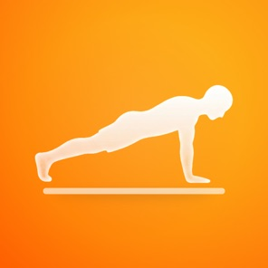
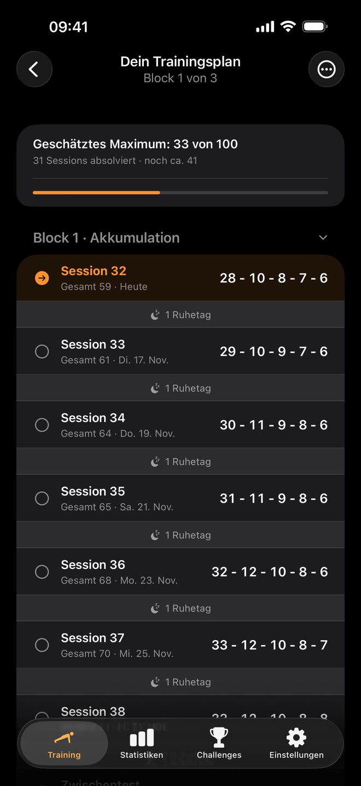
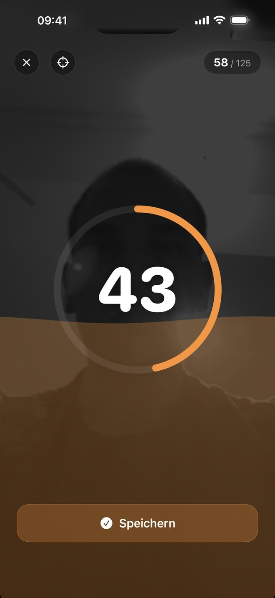
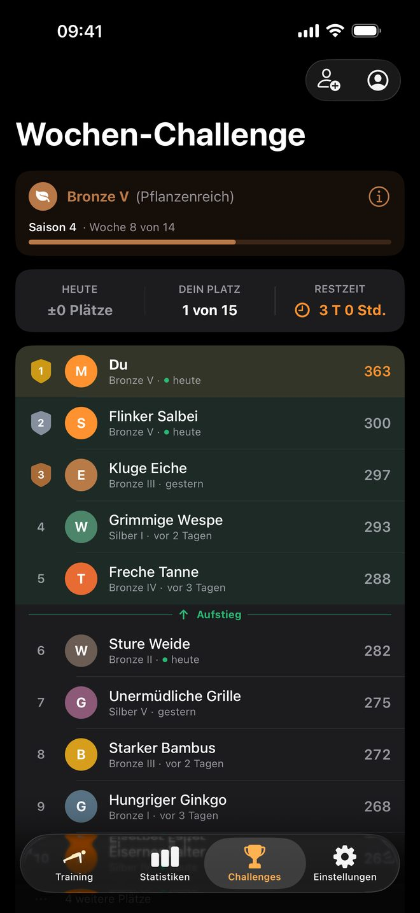

Zählen
Die Kamera zählt für dich
Stell dein iPhone hin und leg los. Es zählt jeden Liegestütz live mit, direkt auf dem Gerät. Aufgenommen wird dabei nichts.

Du machst die Liegestütze, dein iPhone zählt mit.
Kostenlos · Ohne Konto · Ohne Werbung



PushForm erkennt mit der iPhone-Kamera jede Wiederholung und zählt deine Liegestütze live mit. Dazu kommen ein Trainingsplan, Tages- und Jahresziele, Streaks und eine Wochen-Challenge mit anderen. Die App ist kostenlos und kommt ohne Konto und ohne Werbung aus.
Zählen
Stell dein iPhone hin und leg los. Es zählt jeden Liegestütz live mit, direkt auf dem Gerät. Aufgenommen wird dabei nichts.
Trainingsplan
Du startest mit einem Test. Danach passt sich der Plan deiner Leistung an und zeigt dir, was als Nächstes dran ist.
Jahresziel & Streaks
Jahresziel, Tagesziel und Streak halten dich bei der Sache. Verpasst du mal einen Tag, rettet ein Freeze deine Streak.
Wochen-Challenge
Du kannst unter einem Fantasienamen in einer von sechs Ligen gegen andere antreten. Gewertet wird nur, was die Kamera gezählt hat.
Statistiken
Berichte und Rekorde zeigen deinen Fortschritt. Im Januar bekommst du deinen Jahresrückblick.
Apple Health
Wenn du möchtest, trägt PushForm deine Trainings und die aktive Energie in Apple Health ein.
Privat
Kein Konto, keine Werbung. Kamerabilder und Körperdaten bleiben auf deinem iPhone. Deine Trainings werden in deiner eigenen iCloud gesichert. Das kannst du jederzeit abschalten.
4,9 von 5 Sternen im App Store · Stand 25.11.2026
„Die automatische Erkennung der Wiederholungen funktioniert sehr zuverlässig, insbesondere seit dem letzten Update. … Ich finde super, dass man die App ohne Anmeldung nutzen kann …“
„Endlich eine geniale und übersichtliche App um die eigene Leistung bei den Liegestützen zu tracken! So wird man motiviert jeden Tag etwas zu tun …“
„Für mich hat sich ein Ehrgeiz entwickelt wieviel schaffe ich und auch das ich meinen eigenen körperlichen Verlauf betrachten kann.“
Durchschnitt und Zitate stammen aus dem App Store, wörtlich und ohne Namen; gezeigt wird eine Auswahl. Bewerten kann dort nur, wer die App geladen hat; darüber hinaus prüft PushForm die Bewertungen nicht. Alle Bewertungen im App Store
Mit der Kamera deines iPhones. Die App erkennt deine Körperhaltung und zählt jede Wiederholung live mit. Ausgewertet wird alles auf dem Gerät. Bilder oder Videos werden weder gespeichert noch übertragen.
Nichts. PushForm ist kostenlos und zeigt keine Werbung.
Nein, du kannst ohne Registrierung loslegen. Für die Sicherung deiner Trainings und für die Wochen-Challenge nutzt die App das iCloud-Konto, mit dem du auf deinem iPhone angemeldet bist.
Eine freiwillige Rangliste, die jede Woche neu startet. Du trittst unter einem Fantasienamen in einer von sechs Ligen an und kannst auf- oder absteigen. Gewertet werden nur Liegestütze, die die Kamera gezählt hat.
Auf dem iPhone mit iOS 17 oder neuer. Das gilt auch für das iPhone Duo, zugeklappt und aufgeklappt. Die App gibt es auf Deutsch und Englisch.
Kamerabilder und Körperdaten bleiben auf deinem iPhone. Deine Trainings werden in deiner eigenen iCloud gesichert. Das kannst du jederzeit abschalten. Nimmst du an der Wochen-Challenge teil, sehen andere Teilnehmende deinen Fantasienamen, deine Liga und deine Liegestütze je Tag der Woche. Die pseudonyme Nutzungsstatistik (z. B. Wiederholungen pro Training) kannst du in den Einstellungen unter „Nutzungsstatistik“ abschalten. Mehr dazu steht in der Datenschutzerklärung.
Unter Statistiken → Alle Trainings löschst du einzelne Trainings oder über „Bearbeiten“ → „Alle löschen“ alle auf einmal – auf Wunsch inkl. der Apple-Health-Einträge. Ist die iCloud-Synchronisation an, wird das Löschen auch in deiner iCloud übernommen. Löschst du nur die App, bleiben deine iCloud-Daten und – falls du teilnimmst – deine Challenge-Angaben erhalten; siehe die beiden Fragen unten.
Ist die iCloud-Synchronisation eingeschaltet, liegen deine Trainingsdaten auch in deiner iCloud. Das Löschen der App entfernt diese nicht automatisch – du löschst sie in den Einstellungen, indem du „iCloud-Synchronisation“ ausschaltest und „Aus iCloud löschen“ wählst. Ist die Synchronisation auf einem weiteren Gerät noch an, schalte sie dort ebenfalls aus, sonst lädt es die Daten wieder hoch.
Im Challenges-Reiter über dein Profil. Dabei wird dein Profil sofort gelöscht, ebenso deine älteren Wochenstände; die Wochenstände der laufenden und der letzten Woche bleiben unter deinem Fantasienamen in der Rangliste dieser beiden Wochen stehen, bis wir sie beim regelmäßigen Aufräumen löschen: Wochenstände nach 13 Wochen, Profile nach sechs Monaten ohne Nutzung (das Aufräumen läuft einmal im Monat). Das gilt auch, wenn du die App löschst, ohne die Challenge zu verlassen. Wenn deine Challenge-Daten sofort entfernt werden sollen, verlasse die Challenge in der App, bevor du die App löschst – wir können die Einträge keiner Person sicher zuordnen.
Ob Frage, Feedback oder ein Problem mit der App: Schreib uns einfach, wir helfen gern weiter.
E-Mail schreiben